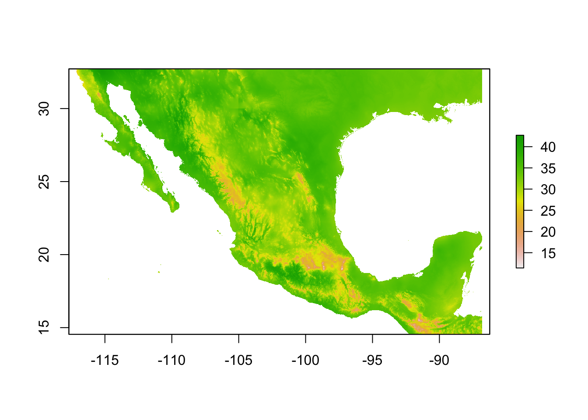

raster
Last updated: 2018-09-04
workflowr checks: (Click a bullet for more information)-
✔ R Markdown file: up-to-date
Great! Since the R Markdown file has been committed to the Git repository, you know the exact version of the code that produced these results.
-
✔ Environment: empty
Great job! The global environment was empty. Objects defined in the global environment can affect the analysis in your R Markdown file in unknown ways. For reproduciblity it’s best to always run the code in an empty environment.
-
✔ Seed:
set.seed(20180820)The command
set.seed(20180820)was run prior to running the code in the R Markdown file. Setting a seed ensures that any results that rely on randomness, e.g. subsampling or permutations, are reproducible. -
✔ Session information: recorded
Great job! Recording the operating system, R version, and package versions is critical for reproducibility.
-
Great! You are using Git for version control. Tracking code development and connecting the code version to the results is critical for reproducibility. The version displayed above was the version of the Git repository at the time these results were generated.✔ Repository version: ae1fd63
Note that you need to be careful to ensure that all relevant files for the analysis have been committed to Git prior to generating the results (you can usewflow_publishorwflow_git_commit). workflowr only checks the R Markdown file, but you know if there are other scripts or data files that it depends on. Below is the status of the Git repository when the results were generated:
Note that any generated files, e.g. HTML, png, CSS, etc., are not included in this status report because it is ok for generated content to have uncommitted changes.Ignored files: Ignored: .DS_Store Ignored: .Rhistory Ignored: .Rproj.user/ Ignored: data/.DS_Store Untracked files: Untracked: .Rbuildignore Untracked: analysis/exercise_solutions.Rmd Untracked: analysis/further_resources.Rmd Untracked: analysis/gis.Rmd Untracked: analysis/mapping.Rmd Untracked: data-raw/ Untracked: data/csv/ Untracked: data/raster/ Untracked: data/sf/ Untracked: docs/figure/exercise_solutions.Rmd/
Expand here to see past versions:
| File | Version | Author | Date | Message |
|---|---|---|---|---|
| Rmd | ae1fd63 | annakrystalli | 2018-09-04 | workflowr::wflow_publish(c(“analysis/raster.Rmd”)) |
setup
Open Notebook
Open a new R Notebook to work in.
File > New File > R Notebook
Name (eg. Rasters) and save it
Load libraries
Load the libraries we’ll be using for this section of the workshop
library(raster)
library(rasterVis)
library(sf)
library(dplyr)
library(ggplot2)Elements of raster data
Gridded data. Each grid cell represented by pixels in the raster. Pixels represent an area of space on the Earth’s surface
3 core metadata elements: - Coordinate Reference System (CRS) - extent - resolution
See “Raster resolution and extent”
Resolution
The spatial resolution of a raster refers the size of each cell in meters. This size in turn relates to the area on the ground that the pixel represents.
The higher the resolution for the same extent the crisper the image (and the larger the file size) 
extent
\(x_{min} + (resolution_{x} \times n_{pixels}_{x})\)

Unlike vector data, the raster data model stores the coordinate of the grid cell only indirectly: There is a less clear distinction between attribute and spatial information in raster data. Say, we are in the 3rd row and the 4th column of a raster matrix. To derive the corresponding coordinate, we have to move from the origin three cells in x-direction and four cells in y-direction with the cell resolution defining the distance for each x- and y-step.
Working with rasters
Create rasters
Rasters can be thought of as matrices appended with additional environmental metadata.
myRaster1 <- raster(nrow=4, ncol=4)
myRaster1class : RasterLayer
dimensions : 4, 4, 16 (nrow, ncol, ncell)
resolution : 90, 45 (x, y)
extent : -180, 180, -90, 90 (xmin, xmax, ymin, ymax)
coord. ref. : +proj=longlat +datum=WGS84 +ellps=WGS84 +towgs84=0,0,0 Let’s have a look at it. Note that when creating a raster, if not specified the CRS falls back to the defaults of:
- CRS:
+proj=longlat +datum=WGS84 +ellps=WGS84 +towgs84=0,0,0 - extent:
-180, 180, -90, 90 (xmin, xmax, ymin, ymax) - resolution:
90, 45 (x, y)
Q: What’s been defined?
Let’s give it some values
myRaster1[] <-1:16
plot(myRaster1)Reading raster files
Data
WorldClim data
- A great resource of global environmental data in raster format.
- Used extensively in species distribution modelling.
- Version 2.0 available but not yet licensed under Creative Commons license (needed to redistribute this data for the workshop).
- Was used in the Velo-Antón et al 2013 montane salamander paper!
Bioclimatic variables
Bioclimatic variables are derived from the monthly temperature and rainfall values in order to generate more biologically meaningful variables. The bioclimatic variables represent annual trends, seasonality, and extreme or limiting environmental factors
- BIO1 = Annual Mean Temperature
- BIO2 = Mean Diurnal Range (Mean of monthly (max temp - min temp))
- BIO3 = Isothermality (BIO2/BIO7) (* 100)
- BIO4 = Temperature Seasonality (standard deviation *100)
- BIO5 = Max Temperature of Warmest Month
- BIO6 = Min Temperature of Coldest Month
- BIO7 = Temperature Annual Range (BIO5-BIO6)
- BIO8 = Mean Temperature of Wettest Quarter
- BIO9 = Mean Temperature of Driest Quarter
- BIO10 = Mean Temperature of Warmest Quarter
- BIO11 = Mean Temperature of Coldest Quarter
- BIO12 = Annual Precipitation
- BIO13 = Precipitation of Wettest Month
- BIO14 = Precipitation of Driest Month
- BIO15 = Precipitation Seasonality (Coefficient of Variation)
- BIO16 = Precipitation of Wettest Quarter
- BIO17 = Precipitation of Driest Quarter
- BIO18 = Precipitation of Warmest Quarter
- BIO19 = Precipitation of Coldest Quarter
I’ve selected a few of the variables used in the original paper to fit a Species Distribution Model.
The data is in the data/raster/mx-worldclim_30s folder.
wc_files <- list.files(here::here("data", "raster", "mx-worldclim_30s"),
full.names = T)
wc_files[1] "/Users/Anna/Documents/workflows/workshops/intro-r-gis/data/raster/mx-worldclim_30s/mx-bio_15.tif"
[2] "/Users/Anna/Documents/workflows/workshops/intro-r-gis/data/raster/mx-worldclim_30s/mx-bio_4.tif"
[3] "/Users/Anna/Documents/workflows/workshops/intro-r-gis/data/raster/mx-worldclim_30s/mx-bio_5.tif"
[4] "/Users/Anna/Documents/workflows/workshops/intro-r-gis/data/raster/mx-worldclim_30s/mx-bio_6.tif" These files are in GeoTIFF format, a public domain metadata standard which allows georeferencing information to be embedded within a TIFF file.
Let’s start with a single raster file, mx.bio_5.tif which corresponds to bioclimatic variable 5: Max Temperature of Warmest Month.
bio5 <- raster(wc_files[3])
bio5class : RasterLayer
dimensions : 2181, 3638, 7934478 (nrow, ncol, ncell)
resolution : 0.008333333, 0.008333333 (x, y)
extent : -117.125, -86.80833, 14.54167, 32.71667 (xmin, xmax, ymin, ymax)
coord. ref. : +proj=longlat +datum=WGS84 +no_defs +ellps=WGS84 +towgs84=0,0,0
data source : /Users/Anna/Documents/workflows/workshops/intro-r-gis/data/raster/mx-worldclim_30s/mx-bio_5.tif
names : mx.bio_5
values : 54, 427 (min, max)This creates a RasterLayer object.
By having a look at the summary of the raster file when we simply print the object, straight away it looks like something funny is going on. It’s showing a range of values between 54 and 427. Now, Mexico can get hot…but not that hot! By checking the documentation for the WorldClim data, we can see that the data is stored as degrees C x 10. This is for storage efficiency (files are much smaller if numbers can be stored as integers) but it means we need to transform the data back to degrees C.
Lukily we can easily manipulate rasters, just like any other matrix in R.
bio5 <- bio5/10
bio5class : RasterLayer
dimensions : 2181, 3638, 7934478 (nrow, ncol, ncell)
resolution : 0.008333333, 0.008333333 (x, y)
extent : -117.125, -86.80833, 14.54167, 32.71667 (xmin, xmax, ymin, ymax)
coord. ref. : +proj=longlat +datum=WGS84 +no_defs +ellps=WGS84 +towgs84=0,0,0
data source : in memory
names : mx.bio_5
values : 5.4, 42.7 (min, max)That’s better!
Plotting rasters
The raster pkg has native plotting functions which are again, ok for a quick check of the data.
plot(bio5)
Package rasterVis offers much nicer options for plotting raster data, including much better colour palletes which are pretty, better represent data, are easier to read by those with colorblindness, and print well in grey scale. by default.
levelplot(bio5)For numeric data it plots the distribution of the data along each axis in the plot margins. We can suppress that default behaviour by using argument margin=FALSE.
levelplot(bio5, margin=FALSE)Now this is great for individual layers, but if we have multiple layers to work with, it can be much more efficient to stack them into a rasterStack.
Raster Stacks
A RasterStack is a collection of RasterLayer objects with the same spatial extent and resolution. A RasterStack can be created from RasterLayer objects, or from raster files, or both.
We can read and stack raster files in one go using function raster::stack! And this is where the list of file names comes in handy.
st <- stack(wc_files)
stclass : RasterStack
dimensions : 2181, 3638, 7934478, 4 (nrow, ncol, ncell, nlayers)
resolution : 0.008333333, 0.008333333 (x, y)
extent : -117.125, -86.80833, 14.54167, 32.71667 (xmin, xmax, ymin, ymax)
coord. ref. : +proj=longlat +datum=WGS84 +no_defs +ellps=WGS84 +towgs84=0,0,0
names : mx.bio_15, mx.bio_4, mx.bio_5, mx.bio_6
min values : 10, 199, 54, -85
max values : 140, 8136, 427, 218 We can still extract individual layers using function raster::subset().
subset(st, "mx.bio_5")class : RasterLayer
dimensions : 2181, 3638, 7934478 (nrow, ncol, ncell)
resolution : 0.008333333, 0.008333333 (x, y)
extent : -117.125, -86.80833, 14.54167, 32.71667 (xmin, xmax, ymin, ymax)
coord. ref. : +proj=longlat +datum=WGS84 +no_defs +ellps=WGS84 +towgs84=0,0,0
data source : /Users/Anna/Documents/workflows/workshops/intro-r-gis/data/raster/mx-worldclim_30s/mx-bio_5.tif
names : mx.bio_5
values : 54, 427 (min, max)Because a rasterStack is effectively a list, we can also subset it as we would any other list in R
st[["mx.bio_5"]]class : RasterLayer
dimensions : 2181, 3638, 7934478 (nrow, ncol, ncell)
resolution : 0.008333333, 0.008333333 (x, y)
extent : -117.125, -86.80833, 14.54167, 32.71667 (xmin, xmax, ymin, ymax)
coord. ref. : +proj=longlat +datum=WGS84 +no_defs +ellps=WGS84 +towgs84=0,0,0
data source : /Users/Anna/Documents/workflows/workshops/intro-r-gis/data/raster/mx-worldclim_30s/mx-bio_5.tif
names : mx.bio_5
values : 54, 427 (min, max)st[[3]]class : RasterLayer
dimensions : 2181, 3638, 7934478 (nrow, ncol, ncell)
resolution : 0.008333333, 0.008333333 (x, y)
extent : -117.125, -86.80833, 14.54167, 32.71667 (xmin, xmax, ymin, ymax)
coord. ref. : +proj=longlat +datum=WGS84 +no_defs +ellps=WGS84 +towgs84=0,0,0
data source : /Users/Anna/Documents/workflows/workshops/intro-r-gis/data/raster/mx-worldclim_30s/mx-bio_5.tif
names : mx.bio_5
values : 54, 427 (min, max)Note that we are back to having incorrect temperature values. We will deal with the layers that need correcting a bit later so just ignore that for now.
Both the native plot method and rasterVis::levelplot can handle rasterStacks
plot(st)levelplot(st)For a quick scan of a rasterStack, plot() is more useful because levelplot() function plot all panels on the same scale but there are ways of plotting with separate scales which we will link to later.
Landcover data
Land cover, original data resampled onto a 30 seconds grid sourced from DIVA GIS. DIVA-GIS is a free computer program for mapping and geographic data analysis (a geographic information system (GIS) which also provide free global spatial data.
lc_files <- list.files(here::here("data", "raster", "MEX_msk_cov"),
full.names = T)lc <- raster(lc_files[1])
lcclass : RasterLayer
dimensions : 2208, 3696, 8160768 (nrow, ncol, ncell)
resolution : 0.008333333, 0.008333333 (x, y)
extent : -117.4, -86.6, 14.4, 32.8 (xmin, xmax, ymin, ymax)
coord. ref. : +proj=longlat +ellps=WGS84
data source : /Users/Anna/Documents/workflows/workshops/intro-r-gis/data/raster/MEX_msk_cov/MEX_msk_cov.grd
names : MEX_msk_cov
values : 1, 22 (min, max)Let’s plot this again to have a look at it.
levelplot(lc)This raster contains categorical data, so the scales used as well as the inclusion of distributions along the margins do not see appropriate. Such data can be better defined using the rasteVis::ratify function.
lc <- ratify(lc)
lcclass : RasterLayer
dimensions : 2208, 3696, 8160768 (nrow, ncol, ncell)
resolution : 0.008333333, 0.008333333 (x, y)
extent : -117.4, -86.6, 14.4, 32.8 (xmin, xmax, ymin, ymax)
coord. ref. : +proj=longlat +ellps=WGS84
data source : /Users/Anna/Documents/workflows/workshops/intro-r-gis/data/raster/MEX_msk_cov/MEX_msk_cov.grd
names : MEX_msk_cov
values : 1, 22 (min, max)
attributes :
ID
from: 1
to : 22Now we see that rather than a values: 1, 22 (min, max) we have an attributes: field containing a table summarising the levels with from: for the first and to: for the last entry. The actual levels are stored in what is known as a “Raster Attribute Table” (RAT). This can be accessed through the levels() function.
levels(lc)[[1]]
ID
1 1
2 2
3 4
4 6
5 9
6 11
7 12
8 13
9 14
10 15
11 16
12 20
13 22Let’s try and plot again.
levelplot(lc)Error in `[.data.frame`(rat, , att): undefined columns selectedThis time, plotting fails. This is because there are no descriptions associated with the levels.
We can define this defined with more informative descriptions. As I forgot to save them as .csv as part of the workshop materials, here is a snippet of code that can be copied and pasted to create a data.frame of factor levels and their associated descriptions.
(or go to http://bit.ly/lc_levels, click on raw and copy the code snippet from there)
lc_levels <- structure(list(level = 1:22, descr = c("Tree Cover, broadleaved, evergreen",
"Tree Cover, broadleaved, deciduous, closed", "Tree Cover, broadleaved, deciduous, open",
"Tree Cover, needle-leaved, evergreen", "Tree Cover, needle-leaved, deciduous",
"Tree Cover, mixed leaf type", "Tree Cover, regularly flooded, fresh water",
"Tree Cover, regularly flooded, saline water", "Mosaic: Tree cover / Other natural vegetation",
"Tree Cover, burnt", "Shrub Cover, closed-open, evergreen", "Shrub Cover, closed-open, deciduous",
"Herbaceous Cover, closed-open", "Sparse Herbaceous or sparse Shrub Cover",
"Regularly flooded Shrub and/or Herbaceous Cover", "Cultivated and managed areas",
"Mosaic: Cropland / Tree Cover / Other natural vegetation", "Mosaic: Cropland / Shrub or Grass Cover",
"Bare Areas", "Water Bodies", "Snow and Ice", "Artificial surfaces and associated areas"
)), class = "data.frame", .Names = c("level", "descr"), row.names = c(NA,
-22L))rat <- levels(lc)[[1]]
rat <- rat %>% left_join(lc_levels, by = c("ID" = "level"))
levels(lc) <- ratLet’s have a look at our land cover raster
lcclass : RasterLayer
dimensions : 2208, 3696, 8160768 (nrow, ncol, ncell)
resolution : 0.008333333, 0.008333333 (x, y)
extent : -117.4, -86.6, 14.4, 32.8 (xmin, xmax, ymin, ymax)
coord. ref. : +proj=longlat +ellps=WGS84
data source : /Users/Anna/Documents/workflows/workshops/intro-r-gis/data/raster/MEX_msk_cov/MEX_msk_cov.grd
names : MEX_msk_cov
values : 1, 22 (min, max)
attributes :
ID descr
from: 1 Tree Cover, broadleaved, evergreen
to : 22 Artificial surfaces and associated areasLet’s plot again
levelplot(lc)Success!
And seeing as we’re dealing with primarily vegetation, let’s create a new map theme (colour palette) using function rasterVis::rasterTheme and colour brewer palette Yellow & Greens (“YlGn”).
mapTheme <- rasterTheme(region = rev(brewer.pal(9,"YlGn")))
levelplot(lc, par.settings = mapTheme)The function takes a vector of colours to produce a colour gradient that is then mapped to raster values. It has a numer of in-built colour vectors to choose from and you can even provide your own custom vectors of functions (which is what we would probably want to do in our case to make the colour more reflective of the vegetation type).
stack everything up
stack(st, lc)Error in compareRaster(x): different extentThis doesn’t work, notifying us that there is a problem with mismatching extents. We don’t really need the whole extent of data anyways so let’s try croping everything to the same extent, that of the study area bounding box we defined in our vector workflow
We can read in the study bounding box into an sf using function sf::read_sf.
study_bbox <- read_sf(here::here("data", "sf", "study_bbox.geojson"))
study_bboxSimple feature collection with 1 feature and 0 fields
geometry type: POLYGON
dimension: XY
bbox: xmin: -99.84806 ymin: 18.94194 xmax: -97.09056 ymax: 19.63083
epsg (SRID): 4326
proj4string: +proj=longlat +datum=WGS84 +no_defs
geometry
1 POLYGON ((-99.84806 18.9419...This bounding box we originally defined is really tight around our data points. To ensure our raster data contain the locations of all our data points, let’s give it some space around our points by using function sf::st_buffer.
Looking at the help file for this function using ?st_buffer gives us information on a whole suite of useful functions to perform geometric operations on simple feature geometry sets.
extract_bbox <- study_bbox %>% st_buffer(dist = 1)Warning in st_buffer.sfc(st_geometry(x), dist, nQuadSegs): st_buffer does
not correctly buffer longitude/latitude dataextract_bboxSimple feature collection with 1 feature and 0 fields
geometry type: POLYGON
dimension: XY
bbox: xmin: -100.8481 ymin: 17.94194 xmax: -96.09056 ymax: 20.63083
epsg (SRID): 4326
proj4string: +proj=longlat +datum=WGS84 +no_defs
geometry
1 POLYGON ((-100.8481 18.9419...To crop a raster we use function raster::crop which will returns a geographic subset of the raster as specified either by an Extent object or an object from which an extent object can be extracted/created.
In our case, we’ll use the study_bbox sf. So let’s try and crop lc first.
crop(lc, extract_bbox)Error in methods::validObject(y): invalid class "Extent" object: TRUEOoops! That throws an error! That’s because of current sf and raster compatibility issues. All we need to do though is convert our sf to an sp spatial class object which raster is designed to work with. We can do this with function sf::as_Spatial.
sp_extract_bbox <- as_Spatial(extract_bbox)
sp_extract_bboxclass : SpatialPolygonsDataFrame
features : 1
extent : -100.8481, -96.09056, 17.94194, 20.63083 (xmin, xmax, ymin, ymax)
coord. ref. : +proj=longlat +datum=WGS84 +no_defs +ellps=WGS84 +towgs84=0,0,0
variables : 0Let’s try now.
crop(lc, sp_study_bbox)Error in .local(x, y, ...): Cannot get an Extent object from argument ySuccess! This works.
So let’s stack and crop all in one go:
full_stack <- stack(
crop(lc, sp_extract_bbox),
crop(st, sp_extract_bbox)
)
full_stackclass : RasterStack
dimensions : 323, 571, 184433, 5 (nrow, ncol, ncell, nlayers)
resolution : 0.008333333, 0.008333333 (x, y)
extent : -100.85, -96.09167, 17.94167, 20.63333 (xmin, xmax, ymin, ymax)
coord. ref. : +proj=longlat +ellps=WGS84
names : MEX_msk_cov, mx.bio_15, mx.bio_4, mx.bio_5, mx.bio_6
min values : 1, 41, 655, 54, -83
max values : 22, 117, 3387, 411, 180 Awesome! We‚Äôve now got all our initial raster files in a single rasterStack üéâ. We‚Äôre not done though. There are two things we need to address for our final rasterStack.
- We want the temperature range (ie the difference between
mx.bio_5andmx.bio_6) for our SDM rather than the extremes. - We also still need to address the fact that our temperature data is currrently in degrees C x 10.
So let’s try and address this by creating a new rasterStack from the layers in our full_stack. We use function raster::stack() again.
env_stack <- stack(
(full_stack[["mx.bio_5"]] - full_stack[["mx.bio_6"]])/10,
full_stack[["mx.bio_4"]],
full_stack[["mx.bio_15"]],
full_stack[["MEX_msk_cov"]])
env_stackclass : RasterStack
dimensions : 323, 571, 184433, 4 (nrow, ncol, ncell, nlayers)
resolution : 0.008333333, 0.008333333 (x, y)
extent : -100.85, -96.09167, 17.94167, 20.63333 (xmin, xmax, ymin, ymax)
coord. ref. : +proj=longlat +datum=WGS84 +no_defs +ellps=WGS84 +towgs84=0,0,0
names : layer, mx.bio_4, mx.bio_15, MEX_msk_cov
min values : 13.7, 655.0, 41.0, 1.0
max values : 27.2, 3387.0, 117.0, 22.0 Let’s give our layers better names. This is easily achieved with function names()
names(env_stack) <- c("temp_range","temp_seasonality",
"prec_seasonality", "land_cover")
env_stackclass : RasterStack
dimensions : 323, 571, 184433, 4 (nrow, ncol, ncell, nlayers)
resolution : 0.008333333, 0.008333333 (x, y)
extent : -100.85, -96.09167, 17.94167, 20.63333 (xmin, xmax, ymin, ymax)
coord. ref. : +proj=longlat +datum=WGS84 +no_defs +ellps=WGS84 +towgs84=0,0,0
names : temp_range, temp_seasonality, prec_seasonality, land_cover
min values : 13.7, 655.0, 41.0, 1.0
max values : 27.2, 3387.0, 117.0, 22.0 Exercise
1) Create and plot a new rasterLayer of rough mean temperature.
(rough because it would be much better to use more data at higher temporal resolution, eg at least monthly, not extremes).
plotting our rasterStack
Let’s try and plot our new environmental stack.
levelplot(env_stack)Error in .checkLevels(levs[[j]], value[[j]]): new raster attributes (factor values) should be in a data.frame (inside a list)This doesn’t work now because we are trying to mix displaying factor and numeric data.
We can still extract and plot individual layers though.
levelplot(env_stack, layers = "temp_seasonality")For more details on how to plot several rasterLayers with different legends (including different data types) in the rasterVis package FAQs. It would also solve the problem we had earlier with plotting multiple layers using the same scale.
Save rasterStack
Finally, let’s save our raster stack as a binary ‘Native’ raster package .grd file format using function raster::writeRaster(). We’ll do that to preserve the layer names in the rasterStack. It also allows us to combine categorical and numeric layers in one file.
writeRaster(env_stack, filename = here::here("data", "raster", "env_stack.grd"))However, these files are not compressed. If the size of the files is an issue, we can save each file as an individual GeoTiff file and reimport them all together into a stack later on.
dir.create(here::here("data", "raster", "processed"))
writeRaster(env_stack,
filename=here::here("data", "raster" ,
"processed", "env_stack.tif"),
bylayer = T, suffix = names(env_stack))The following code lists all the files in the processed folder, matching only those files that end with .tiff (ignoring the env_land_cover.tif.aux.xml file which contains the RAT and would throw an error), reads and stacks them!
stack(list.files(here::here("data", "raster" , "processed"),
pattern = ".tif$",
full.names = T))class : RasterStack
dimensions : 323, 571, 184433, 4 (nrow, ncol, ncell, nlayers)
resolution : 0.008333333, 0.008333333 (x, y)
extent : -100.85, -96.09167, 17.94167, 20.63333 (xmin, xmax, ymin, ymax)
coord. ref. : +proj=longlat +ellps=WGS84 +no_defs
names : env_stack_land_cover, env_stack_prec_seasonality, env_stack_temp_range, env_stack_temp_seasonality
min values : 1.0, 41.0, 13.7, 655.0
max values : 22.0, 117.0, 27.2, 3387.0 extract environmental data
extracting points
We can extract data underlying an sf from a raster using function raster::extract(). The output in the case of points is a single value for each point. This is returned as a vector for a single layer or a matrix for multiple layers, as is our case.
Firsts, let’s load the molecular data that we have converted to an sf.
mol_sf <- read_sf(here::here("data", "sf", "salamander.geojson"))
mol_sfSimple feature collection with 15 features and 9 fields
geometry type: POINT
dimension: XY
bbox: xmin: -99.84806 ymin: 18.94194 xmax: -97.09056 ymax: 19.63083
epsg (SRID): 4326
proj4string: +proj=longlat +datum=WGS84 +no_defs
# A tibble: 15 x 10
id locality n mountain_chain region na he ar par
<int> <chr> <int> <chr> <chr> <dbl> <dbl> <dbl> <dbl>
1 1 Nevado de… 12 Nevado de Toluca Centr… 5.44 0.620 4.56 0.350
2 2 Texcalyac… 29 Sierra de las C… Centr… 8.22 0.660 5.14 0.500
3 3 Desierto … 7 Sierra de las C… Centr… 4.44 0.590 4.44 0.180
4 4 Ajusco 8 Sierra de las C… Centr… 4.22 0.490 4.05 0.0200
5 8 Calpan 34 Sierra Nevada Centr… 11.9 0.730 6.48 0.290
6 9 Atzompa 43 Sierra Nevada Centr… 10.3 0.690 5.79 0.0800
7 10 Llano Gra… 15 Sierra Nevada (… Centr… 7.78 0.650 5.80 0.250
8 11 Rio Frio 27 Sierra Nevada (… Centr… 7.56 0.570 4.77 0.130
9 12 Nanacamil… 14 Sierra Nevada (… Centr… 6.22 0.590 4.91 0.100
10 13 MalincheS 8 Malinche Centr… 5.00 0.580 4.69 0.0900
11 14 MalincheW 17 Malinche Centr… 6.67 0.600 4.76 0.0600
12 16 MalincheE 13 Malinche Centr… 6.11 0.560 4.73 0.210
13 17 Texmalaqu… 8 Pico de Orizaba South… 6.00 0.710 5.64 0.910
14 18 Xometla 16 Pico de Orizaba South… 9.11 0.830 6.86 0.490
15 19 Vigas 48 Cofre de Perote North… 11.8 0.660 5.75 1.31
# ... with 1 more variable: geometry <POINT [°]>Because we want to combine it with our previous data in mol_sf we’ll pipe the resulting matrix into as.data.frame so we can easily bind our extracted environmental data to our molecular data.
env_points <- extract(env_stack, as_Spatial(mol_sf)) %>% as.data.frame()
mol_env_sf <- bind_cols(mol_sf, env_points)
mol_env_sfSimple feature collection with 15 features and 13 fields
geometry type: POINT
dimension: XY
bbox: xmin: -99.84806 ymin: 18.94194 xmax: -97.09056 ymax: 19.63083
epsg (SRID): 4326
proj4string: +proj=longlat +datum=WGS84 +no_defs
# A tibble: 15 x 14
id locality n mountain_chain region na he ar par
<int> <chr> <int> <chr> <chr> <dbl> <dbl> <dbl> <dbl>
1 1 Nevado de… 12 Nevado de Toluca Centr… 5.44 0.620 4.56 0.350
2 2 Texcalyac… 29 Sierra de las C… Centr… 8.22 0.660 5.14 0.500
3 3 Desierto … 7 Sierra de las C… Centr… 4.44 0.590 4.44 0.180
4 4 Ajusco 8 Sierra de las C… Centr… 4.22 0.490 4.05 0.0200
5 8 Calpan 34 Sierra Nevada Centr… 11.9 0.730 6.48 0.290
6 9 Atzompa 43 Sierra Nevada Centr… 10.3 0.690 5.79 0.0800
7 10 Llano Gra… 15 Sierra Nevada (… Centr… 7.78 0.650 5.80 0.250
8 11 Rio Frio 27 Sierra Nevada (… Centr… 7.56 0.570 4.77 0.130
9 12 Nanacamil… 14 Sierra Nevada (… Centr… 6.22 0.590 4.91 0.100
10 13 MalincheS 8 Malinche Centr… 5.00 0.580 4.69 0.0900
11 14 MalincheW 17 Malinche Centr… 6.67 0.600 4.76 0.0600
12 16 MalincheE 13 Malinche Centr… 6.11 0.560 4.73 0.210
13 17 Texmalaqu… 8 Pico de Orizaba South… 6.00 0.710 5.64 0.910
14 18 Xometla 16 Pico de Orizaba South… 9.11 0.830 6.86 0.490
15 19 Vigas 48 Cofre de Perote North… 11.8 0.660 5.75 1.31
# ... with 5 more variables: geometry <POINT [°]>, temp_range <dbl>,
# temp_seasonality <dbl>, prec_seasonality <dbl>, land_cover <dbl>Our new sf is now ready to use for species distribution modelling. But we can also start visualising the relationships between our molecular and environmental variables
ggplot(mol_env_sf, aes(x = temp_range, y = na, colour = region)) +
geom_point()extracting and summarising raster data using polygons
mean_temp_range <- extract(env_stack[["temp_range"]],
as_Spatial(study_bbox),
fun = mean,
na.rm = T)Error in `[.data.frame`(x@data, i, j, ..., drop = FALSE): undefined columns selectedmean_temp_rangeError in eval(expr, envir, enclos): object 'mean_temp_range' not foundLet’s use this to calculate the deviation of our datapoints from the study box mean. We can use dplyr::mutate to manipulate attribute data in our sf just like any other data.frame.
mol_env_sf <- mol_env_sf %>%
mutate(dev_temp_range = temp_range - as.vector(mean_temp_range))Error in mutate_impl(.data, dots): Evaluation error: object 'mean_temp_range' not found.mol_env_sf %>% select(locality, dev_temp_range)Error in .f(.x[[i]], ...): object 'dev_temp_range' not foundLet’s save our final sf now containing the environmental data we extracted
write_sf(mol_env_sf, here::here("data", "sf", "env_salamander.geojson"))Dataset /Users/Anna/Documents/workflows/workshops/intro-r-gis/data/sf/env_salamander.geojson already exists: remove first, use update=TRUE to append,
delete_layer=TRUE to delete layer, or delete_dsn=TRUE to remove the entire data source before writing.Error in CPL_write_ogr(obj, dsn, layer, driver, as.character(dataset_options), : Dataset already exists.Exercise
2) Calculate mean precipitation seasonality for the study bounding box area. What is the value?
mean_prec_seasonality <- raster::extract(env_stack[["prec_seasonality"]],
study_bbox,
fun = mean,
na.rm = T)Error in `[.data.frame`(x@data, i, j, ..., drop = FALSE): undefined columns selectedmean_prec_seasonalityError in eval(expr, envir, enclos): object 'mean_prec_seasonality' not found3) Add a column indicating whether data points are greater than (TRUE) or less than (FALSE) study area mean precipipation seasonality.
Other useful raster functions you should know about:
http://rspatial.org/spatial/rst/8-rastermanip.html
merge: mergetrim(remove outerNArows and columns)extendprojectRaster: Project the values of a Raster* object to a new Raster* object with another projection (coordinate reference system, (CRS)).
Session information
sessionInfo()R version 3.4.4 (2018-03-15)
Platform: x86_64-apple-darwin15.6.0 (64-bit)
Running under: macOS High Sierra 10.13.3
Matrix products: default
BLAS: /Library/Frameworks/R.framework/Versions/3.4/Resources/lib/libRblas.0.dylib
LAPACK: /Library/Frameworks/R.framework/Versions/3.4/Resources/lib/libRlapack.dylib
locale:
[1] en_GB.UTF-8/en_GB.UTF-8/en_GB.UTF-8/C/en_GB.UTF-8/en_GB.UTF-8
attached base packages:
[1] stats graphics grDevices utils datasets methods base
other attached packages:
[1] bindrcpp_0.2.2 ggplot2_3.0.0 dplyr_0.7.6
[4] sf_0.6-3 rasterVis_0.45 latticeExtra_0.6-28
[7] RColorBrewer_1.1-2 lattice_0.20-35 raster_2.6-7
[10] sp_1.2-5
loaded via a namespace (and not attached):
[1] zoo_1.8-3 tidyselect_0.2.4 purrr_0.2.5
[4] colorspace_1.3-2 htmltools_0.3.6 viridisLite_0.3.0
[7] emo_0.0.0.9000 yaml_2.1.19 utf8_1.1.3
[10] rlang_0.2.1 R.oo_1.21.0 e1071_1.6-8
[13] hexbin_1.27.1 pillar_1.2.1 glue_1.2.0.9000
[16] withr_2.1.2 DBI_1.0.0 R.utils_2.6.0
[19] bindr_0.1.1 plyr_1.8.4 stringr_1.3.1
[22] munsell_0.5.0 gtable_0.2.0 workflowr_1.0.1
[25] R.methodsS3_1.7.1 evaluate_0.11 labeling_0.3
[28] knitr_1.20 parallel_3.4.4 class_7.3-14
[31] Rcpp_0.12.18 backports_1.1.2 scales_1.0.0
[34] classInt_0.1-24 digest_0.6.15 stringi_1.2.4
[37] grid_3.4.4 rprojroot_1.3-2 cli_1.0.0
[40] here_0.1 rgdal_1.3-4 tools_3.4.4
[43] magrittr_1.5 lazyeval_0.2.1 tibble_1.4.2
[46] crayon_1.3.4 whisker_0.3-2 pkgconfig_2.0.2
[49] lubridate_1.7.4 rstudioapi_0.7 assertthat_0.2.0
[52] rmarkdown_1.10 R6_2.2.2 units_0.6-0
[55] git2r_0.21.0 compiler_3.4.4 This reproducible R Markdown analysis was created with workflowr 1.0.1